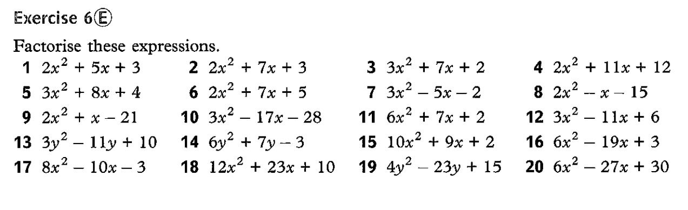

Factorising Quadratics
Test your Understanding
\( (2x+3)(x^2-5x+2) \)
\( x(x+2)(x-5) \)
\( x(x+3)(x+2) \)
\( (3x-4)(2x-1)(4x-3) \)
\( (2x-3)^3 \)
Five Step Method
Copy out the column and row headings using brackets. This is your answer.
Hello
Hello
Hello
Hello
Hello
Hello
Hello
Hello
Hello
Practising the last step
Factorise \( 2x^2+11x+15 \)
\( ac=30\;\textsf{and}\;b=11\Rightarrow 5, 6 \)
\[ \begin{aligned} 2x^2+11x+15&=2x^2+6x+5x+15\\ &=\\ &=\ \end{aligned} \]
Factorise \( 2x^2+11x+15 \)
\( ac=30\;\textsf{and}\;b=11\Rightarrow 5, 6 \)
\[ \begin{aligned} 2x^2+6x+5x+15&=\\ &=\\ \end{aligned} \]
Factorise
\( 3x^2+3x+4 \)
\( 4x^2-5x-6 \)
The five steps:
Multiply \( a \) and \( c \). Identify \( b \)
Find two numbers that multiply to make \( ac \) and add to make \( b \)
Draw a 3 by 3 grid and fill in what you know
Copy out the column headins and row headings using brackets - that's your answer
Copy out the column and row headings using brackets. This is your answer.

When you have completed the above questions, in your text book:
DrFrostMaths
- a key skill set on factorising quadratics where \( a > 1\)
It is set for a
lot
of practice - this is skill that should be automatic :)